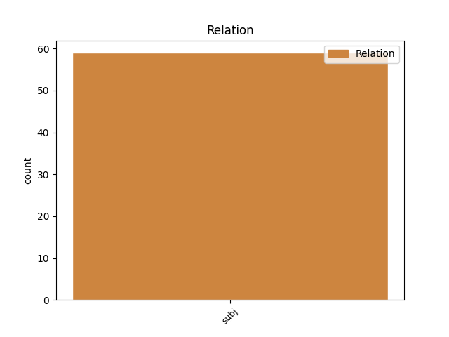
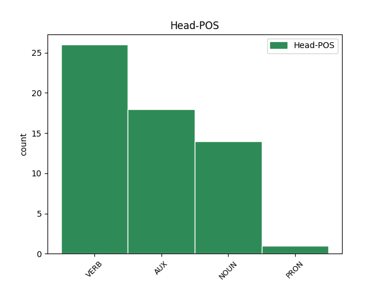
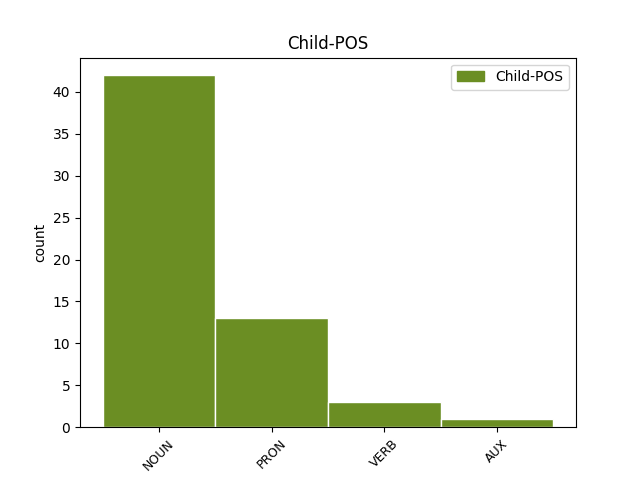

Distribution of features within this leaf



Agreement Rules sorted by frequency.
- When the dependent token is the subject(subj) of the head token, and the head token is VERB and the dependent token is NOUN.
1 இந்தியாவில் _ _ _ _ 0 _ _ _
2 மத்திய _ _ _ _ 0 _ _ _
3 அரசினுடைய _ _ _ _ 0 _ _ _
4 பணத்தை _ _ _ _ 0 _ _ _
5 அவர்கள் _ _ _ _ 0 _ _ _
6 நாடாளுமன்ற _ _ _ _ 0 _ _ _
7 தொகுதிகளுக்க் _ _ _ _ 0 _ _ _
8 ஆக _ _ _ _ 0 _ _ _
9 ஒதுக்குகின்ற _ _ _ _ 0 _ _ _
10 பணம் _ _ _ _ 0 _ _ _
11 ஏற்கெனவே _ _ _ _ 0 _ _ _
12 ஆங்காங்கே _ _ _ _ 0 _ _ _
13 நாடாளுமன்ற _ _ _ _ 0 _ _ _
14 தொகுதிகளுக்க் _ _ _ _ 0 _ _ _
15 ஆகச் _ _ _ _ 0 _ _ _
16 செலவழிக்கப் _ _ _ _ 0 _ _ _
17 படுகிற _ _ _ _ 0 _ _ _
18 நிலைய் _ _ _ _ 0 _ _ _
19 இருந்தால் _ _ _ _ 0 _ _ _
20 உம் _ _ _ _ 0 _ _ _
21 கூட _ _ _ _ 0 _ _ _
22 , _ _ _ _ 0 _ _ _
23 சட்டப் _ _ _ _ 0 _ _ _
24 பேரவைத் _ _ _ _ 0 _ _ _
25 தொகுதிகளுக்கு _ _ _ _ 0 _ _ _
26 ஒதுக்கப் _ _ _ _ 0 _ _ _
27 படுகிற _ _ _ _ 0 _ _ _
28 பணத்தை _ _ _ _ 0 _ _ _
29 - _ _ _ _ 0 _ _ _
30 அந்தத் _ _ _ _ 0 _ _ _
31 தொகுதி _ _ _ _ 0 _ _ _
32 மேம்பாட்டுக்காகச் _ _ _ _ 0 _ _ _
33 செலவழிக்க _ _ _ _ 0 _ _ _
34 வேண்டும் _ _ _ _ 0 _ _ _
35 என்று _ _ _ _ 0 _ _ _
36 முதல் _ _ _ _ 0 _ _ _
37 குரல் குரல் NOUN NNN-3SN-- Case=Nom|Gender=Neut|Number=Sing|Person=3 38 subj _ LTranslit=kural|Translit=kural
38 கொடுத்தது கொடு VERB VzND3SNAA Case=Nom|Gender=Neut|Number=Sing|Person=3|Polarity=Pos|Tense=Past|VerbForm=Ger|Voice=Act 0 _ _ _
39 தமிழகத்தில் _ _ _ _ 0 _ _ _
40 தான் _ _ _ _ 0 _ _ _
41 . _ _ _ _ 0 _ _ _
1 ராஜபட்சவ் _ _ _ _ 0 _ _ _
2 உம் _ _ _ _ 0 _ _ _
3 சிங்கள _ _ _ _ 0 _ _ _
4 அரச் _ _ _ _ 0 _ _ _
5 உம் _ _ _ _ 0 _ _ _
6 போர் _ _ _ _ 0 _ _ _
7 மரபுகளை _ _ _ _ 0 _ _ _
8 மீறி _ _ _ _ 0 _ _ _
9 மனிதநேயம் _ _ _ _ 0 _ _ _
10 அற்ற _ _ _ _ 0 _ _ _
11 முறையில் _ _ _ _ 0 _ _ _
12 போர்க் _ _ _ _ 0 _ _ _
13 குற்றம் _ _ _ _ 0 _ _ _
14 இழைத்த் _ _ _ _ 0 _ _ _
15 உள்ளனர் _ _ _ _ 0 _ _ _
16 என்று _ _ _ _ 0 _ _ _
17 ஜனநாயகத்தின் _ _ _ _ 0 _ _ _
18 மீது _ _ _ _ 0 _ _ _
19 நம்பிக்கை _ _ _ _ 0 _ _ _
20 உள்ள _ _ _ _ 0 _ _ _
21 சர்வதேச _ _ _ _ 0 _ _ _
22 நாடுகள் _ _ _ _ 0 _ _ _
23 கண்டித்து _ _ _ _ 0 _ _ _
24 வருகிற _ _ _ _ 0 _ _ _
25 நிலையில் _ _ _ _ 0 _ _ _
26 , _ _ _ _ 0 _ _ _
27 மத்திய _ _ _ _ 0 _ _ _
28 அரசு அரசு NOUN NNN-3SN-- Case=Nom|Gender=Neut|Number=Sing|Person=3 36 subj _ LTranslit=aracu|Translit=aracu
29 அதற்கு _ _ _ _ 0 _ _ _
30 நேர்மாறாக _ _ _ _ 0 _ _ _
31 ஒரு _ _ _ _ 0 _ _ _
32 போர்க் _ _ _ _ 0 _ _ _
33 குற்றவாளிக்கு _ _ _ _ 0 _ _ _
34 சிவப்புக் _ _ _ _ 0 _ _ _
35 கம்பளம் _ _ _ _ 0 _ _ _
36 விரிப்பது விரி AUX VzNF3SNAA Case=Nom|Gender=Neut|Number=Sing|Person=3|Polarity=Pos|Tense=Fut|VerbForm=Ger|Voice=Act 0 _ _ _
37 அத்தகைய _ _ _ _ 0 _ _ _
38 போர்க் _ _ _ _ 0 _ _ _
39 குற்றத்தில் _ _ _ _ 0 _ _ _
40 மத்திய _ _ _ _ 0 _ _ _
41 அரசின் _ _ _ _ 0 _ _ _
42 பங்களிப்பு _ _ _ _ 0 _ _ _
43 எத்தகையது _ _ _ _ 0 _ _ _
44 என்பதை _ _ _ _ 0 _ _ _
45 உறுதிப்படுத்துவத் _ _ _ _ 0 _ _ _
46 ஆக _ _ _ _ 0 _ _ _
47 உள்ளது _ _ _ _ 0 _ _ _
48 . _ _ _ _ 0 _ _ _
1 இந்த _ _ _ _ 0 _ _ _
2 ஆலயத்துக்கு _ _ _ _ 0 _ _ _
3 ஹூஸ்டனில் _ _ _ _ 0 _ _ _
4 வசிக்கும் _ _ _ _ 0 _ _ _
5 மக்கள் _ _ _ _ 0 _ _ _
6 மட்டுமல்லாது _ _ _ _ 0 _ _ _
7 அமெரிக்கா _ _ _ _ 0 _ _ _
8 முழுவதும் _ _ _ _ 0 _ _ _
9 வசிக்கும் _ _ _ _ 0 _ _ _
10 இந்திய _ _ _ _ 0 _ _ _
11 மக்கள் மக்கள் NOUN NNN-3PA-- Animacy=Anim|Case=Nom|Gender=Com|Number=Plur|Person=3 13 subj _ LTranslit=makkaḷ|Translit=makkaḷ
12 வந்து _ _ _ _ 0 _ _ _
13 வழிபாடு வழிபாடு NOUN NNN-3SN-- Case=Nom|Gender=Neut|Number=Sing|Person=3 0 _ _ _
14 நடத்துகின்றனர் _ _ _ _ 0 _ _ _
15 . _ _ _ _ 0 _ _ _
1 இதுகுறித்து _ _ _ _ 0 _ _ _
2 அவர் அவர் PRON RpN-3SH-- Case=Nom|Gender=Com|Number=Sing|Person=3|Polite=Form|PronType=Prs 8 subj _ LTranslit=avar|Translit=avar
3 இன்று _ _ _ _ 0 _ _ _
4 வெளியிட்ட் _ _ _ _ 0 _ _ _
5 உள்ள _ _ _ _ 0 _ _ _
6 அறிக்கையில் _ _ _ _ 0 _ _ _
7 கூறியிருப்பத் _ _ _ _ 0 _ _ _
8 இருப்பத் இரு AUX VZNF3SNAA Case=Nom|Gender=Neut|Number=Sing|Person=3|Polarity=Pos|Tense=Fut|VerbForm=Ger|Voice=Act 0 _ _ _
9 ஆவது _ _ _ _ 0 _ _ _
10 : _ _ _ _ 0 _ _ _
11 . _ _ _ _ 0 _ _ _
1 இந்த _ _ _ _ 0 _ _ _
2 விபத்தில் _ _ _ _ 0 _ _ _
3 உயிரிழந்தவர்கள் _ _ _ _ 0 _ _ _
4 அனைவரும் அனைவர் PRON RpN-3PA-- Animacy=Anim|Case=Nom|Gender=Com|Number=Plur|Person=3|PronType=Prs 8 subj _ LTranslit=anaivar|Translit=anaivarum
5 உள்ளூர் _ _ _ _ 0 _ _ _
6 தொழிற்சாலை _ _ _ _ 0 _ _ _
7 ஒன்றின் _ _ _ _ 0 _ _ _
8 பணியாளர்கள் பணியாளர் NOUN NNN-3PA-- Animacy=Anim|Case=Nom|Gender=Com|Number=Plur|Person=3 0 _ _ _
9 . _ _ _ _ 0 _ _ _
1 இந்த _ _ _ _ 0 _ _ _
2 கூட்டுப் _ _ _ _ 0 _ _ _
3 பணியில் _ _ _ _ 0 _ _ _
4 நான் நான் PRON RpN-1SA-- Animacy=Anim|Case=Nom|Gender=Com|Number=Sing|Person=1|PronType=Prs 6 subj _ LTranslit=nān|Translit=nān
5 உம் _ _ _ _ 0 _ _ _
6 ஈடுபட்டது ஈடுபடு VERB VzND3SNAA Case=Nom|Gender=Neut|Number=Sing|Person=3|Polarity=Pos|Tense=Past|VerbForm=Ger|Voice=Act 0 _ _ _
7 தலைமைச் _ _ _ _ 0 _ _ _
8 செயலாளர் _ _ _ _ 0 _ _ _
9 ஆக _ _ _ _ 0 _ _ _
10 நான் _ _ _ _ 0 _ _ _
11 இருந்த _ _ _ _ 0 _ _ _
12 காலத்தில் _ _ _ _ 0 _ _ _
13 சாதனைய் _ _ _ _ 0 _ _ _
14 ஆகக் _ _ _ _ 0 _ _ _
15 கருதுகிறேன் _ _ _ _ 0 _ _ _
16 என்றார் _ _ _ _ 0 _ _ _
17 கே.எஸ்.ஸ்ரீபதி _ _ _ _ 0 _ _ _
18 . _ _ _ _ 0 _ _ _
1 குரல் _ _ _ _ 0 _ _ _
2 வாக்கெடுப்பு _ _ _ _ 0 _ _ _
3 மூலம் _ _ _ _ 0 _ _ _
4 ஒரு _ _ _ _ 0 _ _ _
5 வாக்கு _ _ _ _ 0 _ _ _
6 கூடுதலாக _ _ _ _ 0 _ _ _
7 பெற்று _ _ _ _ 0 _ _ _
8 எடியூரப்பா _ _ _ _ 0 _ _ _
9 அரசு _ _ _ _ 0 _ _ _
10 வெற்றி _ _ _ _ 0 _ _ _
11 பெற்றுவிட்டத் _ _ _ _ 0 _ _ _
12 ஆக _ _ _ _ 0 _ _ _
13 அறிவித்தது அறிவி VERB VzND3SNAA Case=Nom|Gender=Neut|Number=Sing|Person=3|Polarity=Pos|Tense=Past|VerbForm=Ger|Voice=Act 17 subj _ LTranslit=arivi|Translit=arivittatu
14 சட்ட _ _ _ _ 0 _ _ _
15 விரோதம் _ _ _ _ 0 _ _ _
16 ஆன _ _ _ _ 0 _ _ _
17 செயல் செயல் NOUN NNN-3SN-- Case=Nom|Gender=Neut|Number=Sing|Person=3 0 _ _ _
18 . _ _ _ _ 0 _ _ _
1 இத் _ _ _ _ 0 _ _ _
2 ஏ _ _ _ _ 0 _ _ _
3 சர்வேயில் _ _ _ _ 0 _ _ _
4 , _ _ _ _ 0 _ _ _
5 ’ _ _ _ _ 0 _ _ _
6 அதிகம் _ _ _ _ 0 _ _ _
7 நேசிக்கப் _ _ _ _ 0 _ _ _
8 படும் _ _ _ _ 0 _ _ _
9 உலகத் _ _ _ _ 0 _ _ _
10 தலைவர்கள் தலைவர் NOUN NNN-3PA-- Animacy=Anim|Case=Nom|Gender=Com|Number=Plur|Person=3 11 subj _ LTranslit=talaivar|Translit=talaivarkaḷ
11 யார் யார் PRON RiN-3SA-- Animacy=Anim|Case=Nom|Gender=Com|Number=Sing|Person=3|PronType=Int 0 _ _ _
12 ? _ _ _ _ 0 _ _ _
13 ’ _ _ _ _ 0 _ _ _
14 என்ற _ _ _ _ 0 _ _ _
15 கருத்துக் _ _ _ _ 0 _ _ _
16 கணிப்பில் _ _ _ _ 0 _ _ _
17 , _ _ _ _ 0 _ _ _
18 இந்தியப் _ _ _ _ 0 _ _ _
19 பிரதமர் _ _ _ _ 0 _ _ _
20 மன்மோகன் _ _ _ _ 0 _ _ _
21 சிங் _ _ _ _ 0 _ _ _
22 முதலிடம் _ _ _ _ 0 _ _ _
23 பிடித்தார் _ _ _ _ 0 _ _ _
24 என்பது _ _ _ _ 0 _ _ _
25 குறிப்பிடத் _ _ _ _ 0 _ _ _
26 தக்கது _ _ _ _ 0 _ _ _
27 . _ _ _ _ 0 _ _ _
1 ஈழத் _ _ _ _ 0 _ _ _
2 தமிழர்களை _ _ _ _ 0 _ _ _
3 ஈவிரக்கம் _ _ _ _ 0 _ _ _
4 இன்றி _ _ _ _ 0 _ _ _
5 லட்சக் _ _ _ _ 0 _ _ _
6 கணக்கில் _ _ _ _ 0 _ _ _
7 கொன்றுகு _ _ _ _ 0 _ _ _
8 வித்த _ _ _ _ 0 _ _ _
9 ராஜபட்சவை _ _ _ _ 0 _ _ _
10 தில்லிக்கு _ _ _ _ 0 _ _ _
11 அழைத்துச் _ _ _ _ 0 _ _ _
12 சிறப்பிக்க _ _ _ _ 0 _ _ _
13 விரும்பும் _ _ _ _ 0 _ _ _
14 மத்திய _ _ _ _ 0 _ _ _
15 அரசின் _ _ _ _ 0 _ _ _
16 அணுகுமுறைய் _ _ _ _ 0 _ _ _
17 ஆனது ஆனது VERB VzND3SNAA Case=Nom|Gender=Neut|Number=Sing|Person=3|Polarity=Pos|Tense=Past|VerbForm=Ger|Voice=Act 25 subj _ LTranslit=ānatu|Translit=ānatu
18 சுமார் _ _ _ _ 0 _ _ _
19 10 _ _ _ _ 0 _ _ _
20 கோடிக்க் _ _ _ _ 0 _ _ _
21 உம் _ _ _ _ 0 _ _ _
22 மேலான _ _ _ _ 0 _ _ _
23 ஒட்டுமொத்தத் _ _ _ _ 0 _ _ _
24 தமிழினத்தையும் _ _ _ _ 0 _ _ _
25 கேவலப்படுத்துவத் கேவலப்படுத்து VERB VzNF3SNAA Case=Nom|Gender=Neut|Number=Sing|Person=3|Polarity=Pos|Tense=Fut|VerbForm=Ger|Voice=Act 0 _ _ _
26 ஆக _ _ _ _ 0 _ _ _
27 அமைந்த் _ _ _ _ 0 _ _ _
28 உள்ளது _ _ _ _ 0 _ _ _
29 . _ _ _ _ 0 _ _ _
1 ராஜபட்சவ் _ _ _ _ 0 _ _ _
2 உம் _ _ _ _ 0 _ _ _
3 சிங்கள _ _ _ _ 0 _ _ _
4 அரச் _ _ _ _ 0 _ _ _
5 உம் _ _ _ _ 0 _ _ _
6 போர் _ _ _ _ 0 _ _ _
7 மரபுகளை _ _ _ _ 0 _ _ _
8 மீறி _ _ _ _ 0 _ _ _
9 மனிதநேயம் _ _ _ _ 0 _ _ _
10 அற்ற _ _ _ _ 0 _ _ _
11 முறையில் _ _ _ _ 0 _ _ _
12 போர்க் _ _ _ _ 0 _ _ _
13 குற்றம் _ _ _ _ 0 _ _ _
14 இழைத்த் _ _ _ _ 0 _ _ _
15 உள்ளனர் _ _ _ _ 0 _ _ _
16 என்று _ _ _ _ 0 _ _ _
17 ஜனநாயகத்தின் _ _ _ _ 0 _ _ _
18 மீது _ _ _ _ 0 _ _ _
19 நம்பிக்கை _ _ _ _ 0 _ _ _
20 உள்ள _ _ _ _ 0 _ _ _
21 சர்வதேச _ _ _ _ 0 _ _ _
22 நாடுகள் _ _ _ _ 0 _ _ _
23 கண்டித்து _ _ _ _ 0 _ _ _
24 வருகிற _ _ _ _ 0 _ _ _
25 நிலையில் _ _ _ _ 0 _ _ _
26 , _ _ _ _ 0 _ _ _
27 மத்திய _ _ _ _ 0 _ _ _
28 அரசு _ _ _ _ 0 _ _ _
29 அதற்கு _ _ _ _ 0 _ _ _
30 நேர்மாறாக _ _ _ _ 0 _ _ _
31 ஒரு _ _ _ _ 0 _ _ _
32 போர்க் _ _ _ _ 0 _ _ _
33 குற்றவாளிக்கு _ _ _ _ 0 _ _ _
34 சிவப்புக் _ _ _ _ 0 _ _ _
35 கம்பளம் _ _ _ _ 0 _ _ _
36 விரிப்பது விரி AUX VzNF3SNAA Case=Nom|Gender=Neut|Number=Sing|Person=3|Polarity=Pos|Tense=Fut|VerbForm=Ger|Voice=Act 45 subj _ LTranslit=viri|Translit=virippatu
37 அத்தகைய _ _ _ _ 0 _ _ _
38 போர்க் _ _ _ _ 0 _ _ _
39 குற்றத்தில் _ _ _ _ 0 _ _ _
40 மத்திய _ _ _ _ 0 _ _ _
41 அரசின் _ _ _ _ 0 _ _ _
42 பங்களிப்பு _ _ _ _ 0 _ _ _
43 எத்தகையது _ _ _ _ 0 _ _ _
44 என்பதை _ _ _ _ 0 _ _ _
45 உறுதிப்படுத்துவத் உறுதிப்படுத்து VERB VzNF3SNAA Case=Nom|Gender=Neut|Number=Sing|Person=3|Polarity=Pos|Tense=Fut|VerbForm=Ger|Voice=Act 0 _ _ _
46 ஆக _ _ _ _ 0 _ _ _
47 உள்ளது _ _ _ _ 0 _ _ _
48 . _ _ _ _ 0 _ _ _
Disagree Examples:
1 விமான _ _ _ _ 0 _ _ _
2 ஊழியர் _ _ _ _ 0 _ _ _
3 இடம் _ _ _ _ 0 _ _ _
4 ராணுவ _ _ _ _ 0 _ _ _
5 அதிகாரிகள் _ _ _ _ 0 _ _ _
6 உள் _ _ _ _ 0 _ _ _
7 ஒருவர் ஒருவர் NOUN NNN-3SH-- Case=Nom|Gender=Com|Number=Sing|Person=3|Polite=Form 10 subj _ LTranslit=oruvar|Translit=oruvar
8 சர்ச்சைக்குரிய _ _ _ _ 0 _ _ _
9 கருத்தைத் _ _ _ _ 0 _ _ _
10 தெரிவித்ததற்க் தெரிவி VERB VzDD3SNAA Case=Dat|Gender=Neut|Number=Sing|Person=3|Polarity=Pos|Tense=Past|VerbForm=Ger|Voice=Act 0 _ _ _
11 ஆகவ் _ _ _ _ 0 _ _ _
12 ஏ _ _ _ _ 0 _ _ _
13 அவர்கள் _ _ _ _ 0 _ _ _
14 அனைவரும் _ _ _ _ 0 _ _ _
15 இறக்கி _ _ _ _ 0 _ _ _
16 விடப் _ _ _ _ 0 _ _ _
17 பட்டத் _ _ _ _ 0 _ _ _
18 ஆகக் _ _ _ _ 0 _ _ _
19 கூறப் _ _ _ _ 0 _ _ _
20 படுகிறது _ _ _ _ 0 _ _ _
21 . _ _ _ _ 0 _ _ _
1 உக்ரைன் _ _ _ _ 0 _ _ _
2 நாட்டில் _ _ _ _ 0 _ _ _
3 பஸ் _ _ _ _ 0 _ _ _
4 ஒன்றின் _ _ _ _ 0 _ _ _
5 மீது _ _ _ _ 0 _ _ _
6 ரயில் ரயில் NOUN NNN-3SN-- Case=Nom|Gender=Neut|Number=Sing|Person=3 7 subj _ LTranslit=rayil|Translit=rayil
7 மோதியதில் மோது VERB VzLD3SNAA Case=Loc|Gender=Neut|Number=Sing|Person=3|Polarity=Pos|Tense=Past|VerbForm=Ger|Voice=Act 0 _ _ _
8 37 _ _ _ _ 0 _ _ _
9 பேர் _ _ _ _ 0 _ _ _
10 உயிரிழந்தனர் _ _ _ _ 0 _ _ _
11 . _ _ _ _ 0 _ _ _
1 ஆசியா _ _ _ _ 0 _ _ _
2 , _ _ _ _ 0 _ _ _
3 ஆப்பிரிக்கா _ _ _ _ 0 _ _ _
4 , _ _ _ _ 0 _ _ _
5 லத்தீன் _ _ _ _ 0 _ _ _
6 அமெரிக்க _ _ _ _ 0 _ _ _
7 பிராந்தியங்களுக்கு _ _ _ _ 0 _ _ _
8 நடைபெறும் _ _ _ _ 0 _ _ _
9 தேர்தலில் _ _ _ _ 0 _ _ _
10 ஒரே _ _ _ _ 0 _ _ _
11 ஒரு _ _ _ _ 0 _ _ _
12 நாடு நாடு NOUN NNN-3SN-- Case=Nom|Gender=Neut|Number=Sing|Person=3 14 subj _ LTranslit=nāṭu|Translit=nāṭu
13 மட்டுமே _ _ _ _ 0 _ _ _
14 போட்டியிடுவதால் போட்டியிடு VERB VzIF3SNAA Case=Ins|Gender=Neut|Number=Sing|Person=3|Polarity=Pos|Tense=Fut|VerbForm=Ger|Voice=Act 0 _ _ _
15 அந்தந்த _ _ _ _ 0 _ _ _
16 நாடுகள் _ _ _ _ 0 _ _ _
17 வெற்றி _ _ _ _ 0 _ _ _
18 பெறுவது _ _ _ _ 0 _ _ _
19 உறுதியாகி _ _ _ _ 0 _ _ _
20 விட்டது _ _ _ _ 0 _ _ _
21 . _ _ _ _ 0 _ _ _
1 இதுகுறித்து _ _ _ _ 0 _ _ _
2 அவர் அவர் PRON RpN-3SH-- Case=Nom|Gender=Com|Number=Sing|Person=3|Polite=Form|PronType=Prs 3 subj _ LTranslit=avar|Translit=avar
3 கூறுகையில் கூறு NOUN NNL-3SN-- Case=Loc|Gender=Neut|Number=Sing|Person=3 0 _ _ _
4 , _ _ _ _ 0 _ _ _
5 எனது _ _ _ _ 0 _ _ _
6 பேச்ச் _ _ _ _ 0 _ _ _
7 உம் _ _ _ _ 0 _ _ _
8 , _ _ _ _ 0 _ _ _
9 கருத்த் _ _ _ _ 0 _ _ _
10 உம் _ _ _ _ 0 _ _ _
11 இந்தளவுக்கு _ _ _ _ 0 _ _ _
12 சர்ச்சையை _ _ _ _ 0 _ _ _
13 ஏற்படுத்தும் _ _ _ _ 0 _ _ _
14 என்று _ _ _ _ 0 _ _ _
15 நான் _ _ _ _ 0 _ _ _
16 எதிர்பார்க்கவ் _ _ _ _ 0 _ _ _
17 இல்லை _ _ _ _ 0 _ _ _
18 . _ _ _ _ 0 _ _ _
1 பிரச்னை பிரச்னை NOUN NNN-3SN-- Case=Nom|Gender=Neut|Number=Sing|Person=3 3 subj _ LTranslit=piracnai|Translit=piracnai
2 பெரித் _ _ _ _ 0 _ _ _
3 ஆகியதால் ஆகு VERB VzID3SNAA Case=Ins|Gender=Neut|Number=Sing|Person=3|Polarity=Pos|Tense=Past|VerbForm=Ger|Voice=Act 0 _ _ _
4 நான் _ _ _ _ 0 _ _ _
5 பயந்து _ _ _ _ 0 _ _ _
6 போனேன் _ _ _ _ 0 _ _ _
7 . _ _ _ _ 0 _ _ _